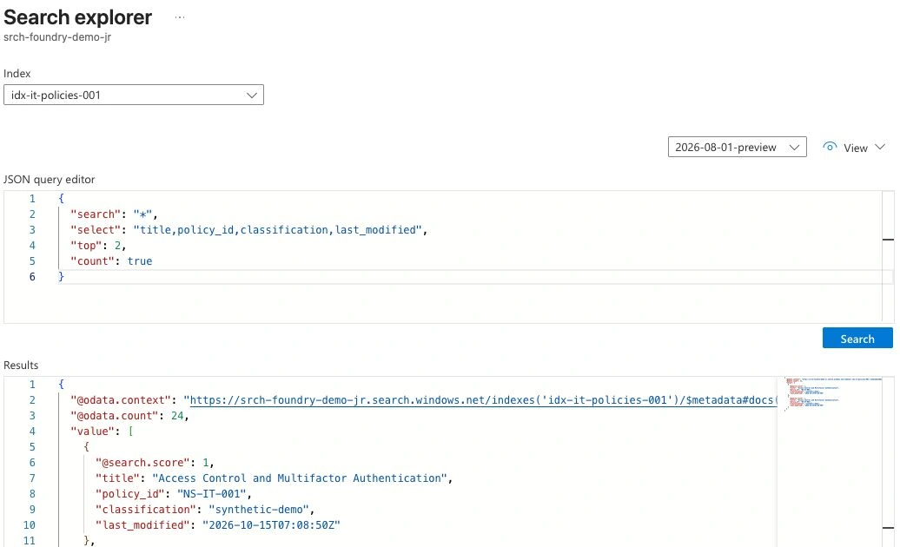

RAG Freshness: Stop Agents Reusing Deleted Documents
You replace a policy PDF. The new document says seven days; the agent still answers thirty. It even cites the right document title.
That can happen when the title stays the same while an old chunk, cached answer or conversation still contains the previous rule. A fresh-looking citation does not establish which version supplied the answer.
I would test this explicitly before using a RAG agent for internal IT or company policy. The example below follows one source through Azure AI Search, cached answers and agent memory. The local validation code is tested; the Azure steps are a documented integration path, not a claim of a tenant deletion test. References were checked on 20 October 2026.
Track the source beyond the PDF
Retrieval-augmented generation, or RAG, brings retrieved information into a modelâs context. Updating the original file is only one part of that informationâs lifecycle.
For a policy assistant, I would track these surfaces:
| Surface | What can remain stale? | Verification |
|---|---|---|
| Source repository | Superseded or deleted edition | Current revision and publication state |
| Search index | Old chunks or missing permission changes | Query actual document/chunk keys |
| Answer cache | A previously valid answer | Recheck source revision and caller access before reuse |
| Conversation or memory | Previously supplied facts | Do not treat them as current policy evidence |
| Saved report | An old decision based on old policy | Preserve its historical date rather than presenting it as current |
The Reddit discussion about growing agent memory asks about quality as history accumulates. For enterprise knowledge, I would add another question: can the system stop reusing a fact when that fact is no longer valid?
Use stable source IDs plus explicit revisions. In a chunked index, record the parent source ID on every chunk. Without that mapping, retiring one document becomes a search for pieces whose identifiers no longer tell you where they came from.
Test change detection and deletion separately


Azure Storage indexers use source timestamps to detect changes. Deletion needs its own supported policy; removing a blob does not automatically prove that its search document disappeared. Configure and test the deletion strategy before relying on it. Change and deletion detection
For a controlled test, create a synthetic policy with a distinctive value. Index it, query it and save the returned keys. Replace the rule, run the indexing path and query again. The old rule should no longer be returned as current evidence.
Then test deletion. If your application pushes chunks itself, delete the known old chunk keys explicitly. A push request uses each search documentâs key, not an assumed parent-document key:
POST https://<search-service>.search.windows.net/indexes/<index>/docs/index?api-version=2026-04-01
Content-Type: application/json
Authorization: Bearer <token-for-the-search-service>
{
"value": [
{ "@search.action": "delete", "id": "policy-travel-v1-chunk-001" },
{ "@search.action": "delete", "id": "policy-travel-v1-chunk-002" }
]
}Replace the key field if your index uses a name other than id. Use an identity authorized to update index data and inspect the per-document results. An HTTP response alone is not the final acceptance test; issue a new retrieval query for the retired rule. Push indexing and document actions
One-to-many indexing needs special care. Do not assume a source-level deletion policy covers every generated chunk. Microsoft documents limitations for those scenarios in the deletion guide. Keep a manifest of chunk keys or a cleanup process you can verify.
Make evidence reuse depend on current state
For my application, an answer-cache entry would carry the source ID, revision and a knowledge epoch. The epoch is an application-owned generation number, incremented when relevant knowledge is replaced. It is not an Azure AI Search API property.
The current-source registry must come from the trusted backend, not from the language model or a request field supplied by the user. Check it before reusing a cached answer.
This small local example makes the rule explicit. Save it as freshness_check.py and run python3 freshness_check.py:
from dataclasses import dataclass, replace
@dataclass(frozen=True)
class Source:
version: str
active: bool
groups: frozenset[str]
@dataclass(frozen=True)
class Evidence:
source_id: str
version: str
epoch: int
observed_at: int
def reusable(ref, registry, caller_groups, epoch, now, max_age=60):
source = registry.get(ref.source_id)
return bool(source and source.active
and source.version == ref.version
and ref.epoch == epoch
and source.groups.intersection(caller_groups)
and 0 <= now - ref.observed_at <= max_age)
registry = {"policy": Source("v2", True, frozenset({"staff"}))}
current = Evidence("policy", "v2", 7, 1000)
assert reusable(current, registry, {"staff"}, 7, 1010)
assert not reusable(replace(current, version="v1"), registry, {"staff"}, 7, 1010)
assert not reusable(current, {}, {"staff"}, 7, 1010)
assert not reusable(current, registry, {"guest"}, 7, 1010)
assert not reusable(current, registry, {"staff"}, 8, 1010)
assert not reusable(current, registry, {"staff"}, 7, 1100)
print("current evidence accepted; stale evidence rejected")The sixty-second age is a teaching value, not a recommended production service level. A short TTL alone cannot notice an immediate permission change. This example also checks the current registry, revision and permitted groups. For an answer with several sources, every supporting reference must pass the applicable checks.
Revalidate access instead of caching permission forever
An answer can be factually current and still be wrong to return to a particular caller. Consider a staff member who moves out of a group after the first answer was cached.
Azure AI Search offers application-managed security filtering and supported native permission approaches. Their prerequisites differ; native ACL and sensitivity-label features may be in preview. Choose the supported route for your data source rather than assuming every index inherits SharePoint permissions. Document-level access options
With application-managed filters, the application is responsible for supplying the correct trusted identity/group scope. Do not let a user choose another groupâs filter in the prompt. Security-filter pattern
Invalidate relevant answer-cache entries on access changes, and check authorization again when serving a result. For sensitive actions, perform the current permission check at the backend that executes the action too.
Include existing conversations in the test
Start one conversation before replacing the policy and another afterward. Ask both the same question after the change.
The older conversation already contains old material. Treat that material as historical context, retrieve current policy again and identify its effective date. If the application cannot establish the current version, it should say so rather than blending both rules.
For a strict retirement requirement, decide how the application handles retained conversation state and memory references. Clearing a search index does not erase previously displayed messages, exported reports or screenshots. The control you can test is whether the application retrieves or generates another answer from retired evidence.
The Copilot memory-controls article covers a specific productâs controls. This source-lifecycle test belongs in the application regardless of which memory library you choose.
Use this acceptance sequence before the next release
- Publish synthetic version one and record its exact chunk IDs.
- Replace it with version two, verify indexing and test both old and new conversations.
- Revoke a test userâs access and repeat retrieval plus cached-answer requests.
- Delete the source through the supported path and verify the retired chunks cannot be retrieved.
- Restore an approved version and verify it can be indexed and retrieved again.
Record source version, index status, caller, query, answer and citations for each step. A citation with the right title is not enough: the answer must use the right version and remain within the callerâs current access.